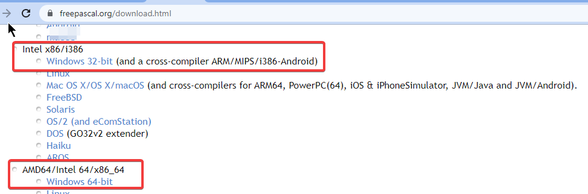
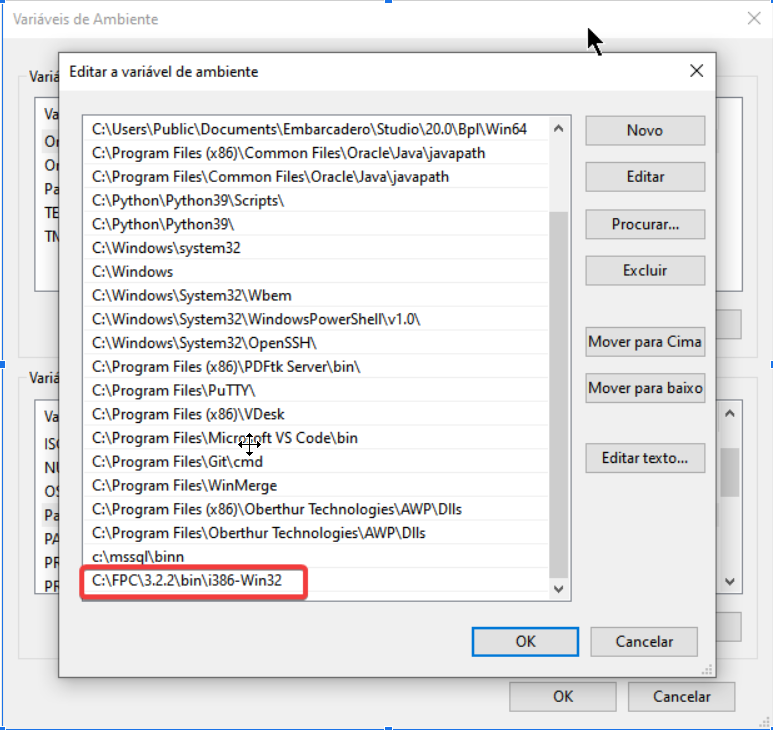
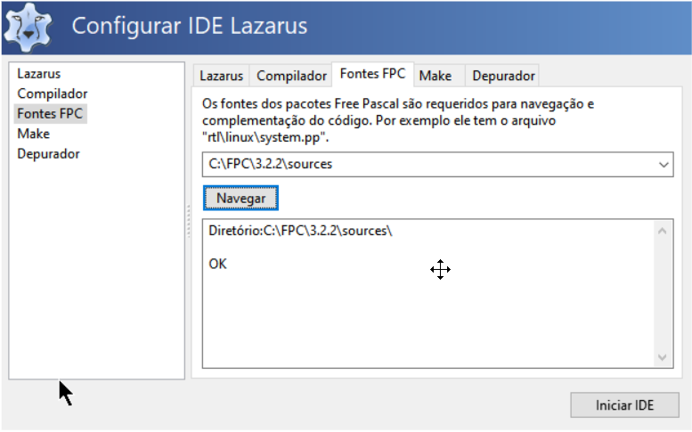

Instale o compilador FreePascal a partir do instalador oficial, se estiver usando
Linux use a versão disponível no seu repositório, seja apt ou dnf.
Para o Windows, o instalador pode ser obtido em:
https://www.freepascal.org/download.html
Escolha a versão apropriada para seu sistema, a mais compativel será “Intel x86/i386->Windows 32-bit”,
mas também poderá usar a versão 64bits indicada abaixo:

A instalação é uma sequência de next->next->finish. Para fins didáticos, vamos supor que tenhamos instalado em C:\FPC\3.2.2.
Acrescente a variavel de ambiente chamada PATH o caminho de instalação do FreePascal:

Precisará baixar o código fonte do compilador FreePascal, você poderá obtê-lo em:
https://www.freepascal.org/down/source/sources.html
Eles normalmente estão compactados e com o sufixo “source” no nome, como pode ver na imagem a seguir:

Baixe e então descompacte-o na pasta onde o FPC foi instalado, em nosso exemplo: c:\FPC\3.2.2 e então uma subpasta com o código fonte será criada e depois ficará assim: C:\FPC\3.2.2\subpasta, renomeie o nome da subpasta para ‘source’ para ser mais informativo e anote este caminho, por exemplo, C:\FPC\3.2.2\sources. Iremos precisar lembrar deste path mais adiante.
Abra o cmd.exe ou o terminal.
Se tiver o Delphi instalado, recomendo que execute:
set path=C:\FPC\3.2.2\bin\i386-win32;%PATH%
Este comando servirá para que os comando do freepascal tenham preferencia aos utilitários de Delphi que possuem o mesmo nome
Vamos criar a pasta que receberá os arquivos do Lazarus:
mkdir c:\lazarus cd c:\Lazarus git clone https://gitlab.com/freepascal.org/lazarus/lazarus.git
O comando acima criou a pasta c:\lazarus\lazarus, este é um nome muito estranhgo para trabalharmos então vamos renomear a subpasta lazarus para um nome mais refinado como lazarus22 ficando no finalc:\lazarus\lazarus22:
ren lazarus lazarus22 cd lazarus22
mkdir configs
git branch --all
Então será listado todos os branchs existentes no repositório oficial:
E então escolha uma versão específica das que foram listadas, se for a 2.2, escolha fixes_2_2 que incluirá a 2.2.x mais os fixes, isto é, as correções da série 2.2. Mas se desejar uma versão que já está saindo do forno, volte o passo anterior e renomeie o diretório de c:\lazarus\lazarus22 para outro nome mais conveniente com a versão escolhida. Para prosseguir com o nosso exemplo:
git switch fixes_2_2
Vamos compilar, ainda no cmd.exe execute:
make clean make bigide>
Vai demorar um pouco, relaxe e vá tomar com café.
A compilação gerará c:\lazarus\lazarus22\lazarus.exe, crie um atalho para ele em sua área de trabalho, mas faça-o com os seguintes parâmetros:
C:\lazarus\lazarus22\lazarus.exe --pcp=C:\lazarus\lazarus22\configsOnde C:\lazarus\lazarus22\configs é a pasta que o lazarus armazenará suas cnofiguraçoes. Mais tarde seresolvermos ter mais uma versão do Lazarus, a configuração de um poderá ser diferente do outro.
ALERTA: Esteja atento a nunca usar a pasta de configuração para versões diferentes de Lazarus.
Quando a IDE iniciar-se irá aparecer uma busca automática pelo código fonte do Free Pascal. Visto que ele não encontrará os fontes - isso é raro - então deverá clicar em “Parar” e indicar o local onde o código fonte do FPC foi descompactado, a saber C:\FPC\3.2.2\sources:
E então clicar em Iniciar IDE.